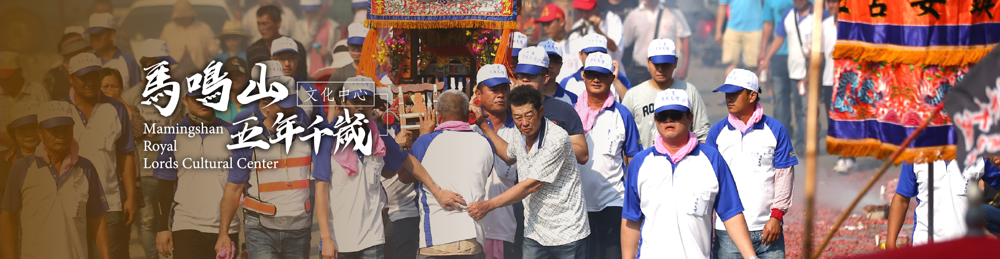

News
香庄是指前來登記迎請五年千歲的聚落，香庄迎請千歲神~像回到庄內進行遶境巡狩，並辦理拜天公、謝平安等相關祭典，多數庄頭會迎請千.....

搜尋香庄 / 寺廟
香庄是五年大科前來迎請馬鳴山鎮安宮五年千嵗神像的「登記單位」，因恭請五年千嵗，大致以村庄為單 位，到馬鳴山鎮安宮迎請，也有「進香」與求取香火之意。相傳早期馬鳴山鎮安宮神像較少時，眾多聚落 都會來廟內求取香火，作為五年大科時祭祀象徵，所以稱為香庄。